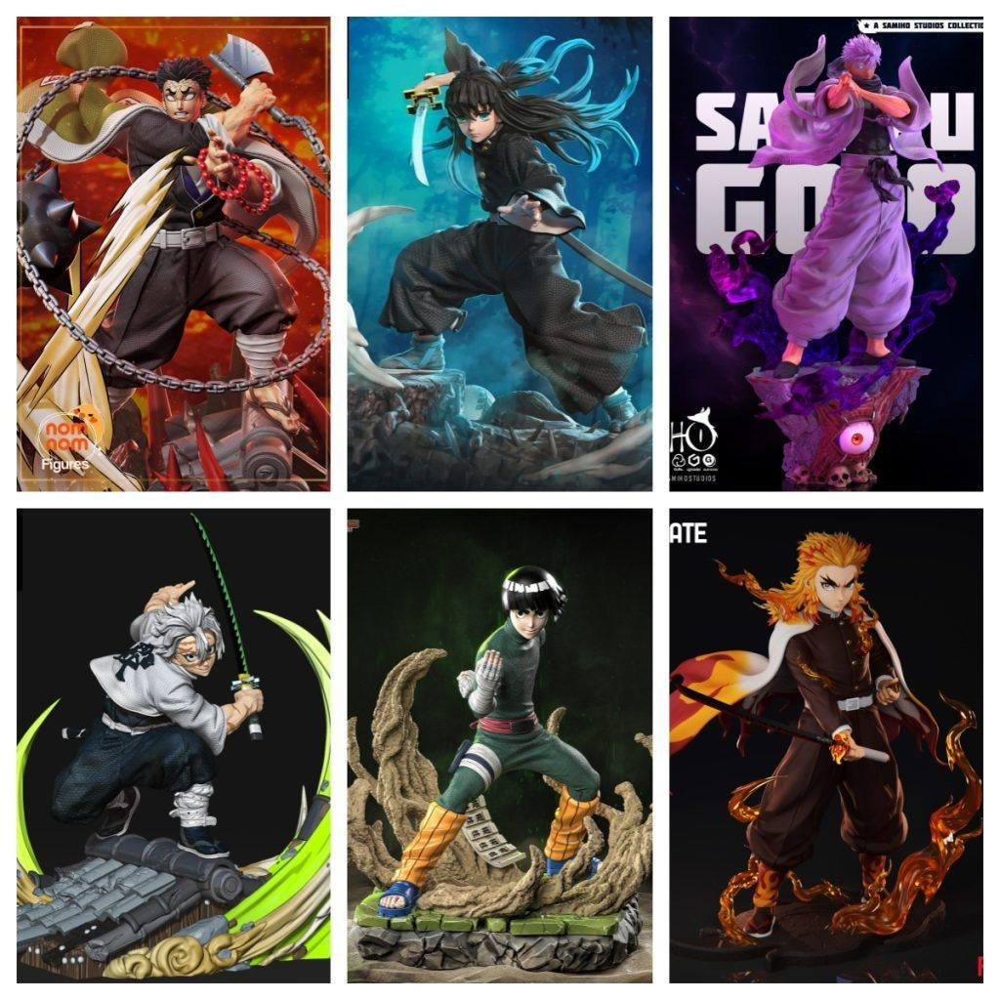

模型分享
2025年10月13日STl图纸文件分享

各位模友，是时候让您的打印机燃烧起来了！本期为您带来的是一组来自《咒术回战》、《鬼灭之刃》等顶级热血动漫的超高人气角色。无论是“最强”的担当，还是“柱”的荣耀，亦或是努力的天才，他们都已准备就绪，等待在您的打印平台上华丽登场。
模型清单与角色简介：
- 1. 《咒术回战》五条悟
- 简介： 公认的“现代最强咒术师”！这款模型无疑会展现他标志性的狂傲不羁与绝对实力。无论是戴着经典眼罩的神秘造型，还是发动「无下限术式」时飘逸的白发与潇洒姿态，都是粉丝必入的终极收藏。
- 2. 《鬼灭之刃》岩柱·悲鸣屿行冥
- 简介： 鬼杀队中最为强大的岩柱。模型以其巨型的体格、泪流不止的面容以及所使用的流星锤和阔斧为特色，完美展现了他那如山岳般沉稳、又兼具慈悲与狂暴的复杂气质，体积感和细节都极具冲击力。
- 3. 《鬼灭之刃》霞柱·时透无一郎
- 简介： 天才剑士，霞柱。模型会捕捉他如云雾般飘逸灵动的剑技姿态，其面无表情下的强大实力通过流畅的肢体语言和飞扬的羽织得以体现，整体造型充满了超凡脱俗的美感。
- 4. 风柱·不死川实弥
- 简介： 充满野性与愤怒的风柱。这款模型定将还原他布满伤痕的凶狠面容和极具攻击性的战斗姿态，独特的锯齿刀纹和随风狂舞的羽织，淋漓尽致地展现了其如烈风般狂暴的战斗风格。
- 5. 《火影忍者》洛克李
- 简介： 努力型天才的典范！“小李”的模型必然是其标志性的紧身衣、西瓜头和浓眉造型。无论是开启「八门遁甲」的爆发瞬间，还是施展「里莲华」的体术姿态，都充满了青春的活力与力量感。
- 6. 炎柱·炼狱杏寿郎
- 简介： 心怀正义、豪爽热情的炎柱！模型大概率展现了他挥刀时如火焰般燃烧的斗志，标志性的黄红交织头发和永不退缩的灿烂笑容。其充满感染力的精神与华丽的炎之呼吸，将使这款作品成为桌面上最耀眼的存在。
打印与涂装建议：
- 动态表现： 这类战斗系角色模型动态感极强，请仔细处理头发、羽织、飘带等大面积悬空结构，合理设置支撑是成功的关键。
- 色彩还原： 涂装是赋予角色灵魂的最后一步。建议参考动画原色，特别注意五条悟的白发蓝眸、炎柱的火焰羽织等标志性配色，以达到最佳视觉效果。
- 细节勾勒： 使用勾线笔或渍洗液强化武器纹路、服装褶皱和肌肉线条，能让人物的立体感和力量感瞬间提升。
愿这组充满热血与信念的强者们，能为您的收藏柜注入无限的激情与力量！
Happy Printing！
链接: https://pan.baidu.com/s/1sQV46q_XXyx52DDeoacMOw?pwd=fs54 提取码: fs54
以上内容仅供个人使用（非商用）
ONLY for PERSONAL (NON-COMMERCIAL) use.
加群获得更多免费模型！